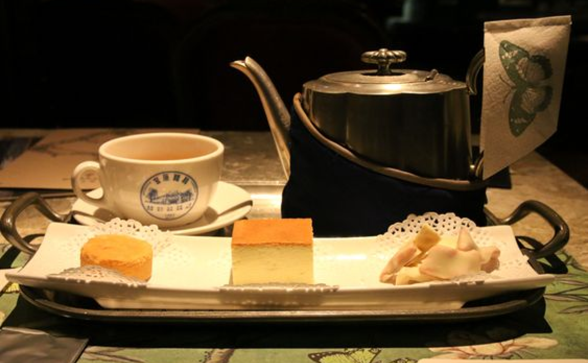

台湾で2番目の大都市を誇る台中市。台中市は台湾中部の台中盆地にあり、いくつもの河川が台中市の中心地を貫いています。

Attraction 観光名所
高美湿地

台中から北西へ約20km、大甲溪の河口に広がるおよそ1500ヘクタールの高美湿地は、天気など条件が重なると周りの風景を鏡面のように反射させることから、「台湾のウユニ塩湖」と呼ばれ注目を集めています。湿地には100種以上の鳥が生息しており、バードウォッチングを楽しんでいる人も多く、周辺には海から吹き付ける風を利用した風力発電の施設が立ち、人工物と自然の景色が独特の景観をつくり出す穴場のスポットです。


おすすめ観光時間は干潮時日暮れとのタイミングが狙い時です。
彩虹眷村

台湾中部台中市には「彩虹眷村」というあまりにもインパクトのある場所があります。一度見たら忘れられない鮮やかな色使いの絵で埋め尽くされたこの地区、日本語にすると「虹の村」と称されるこの場所は、家にも壁にも道路にもびっしりと絵が描かれています。そしてこの絵を描いたのは、たった一人のおじいちゃんなのです。今回は見れば元気になる台中市の必見スポットをご紹介します。


住民の方がいるので早朝や夜の訪問は控え、日中に訪れましょう。
Museum 博物館
文化の街とも呼ばれる台中。その中でもおすすめの博物館をご紹介します。
アンティーク美術館
新天地西洋博物館

科学美術館
アジア近代美術館
屋内外美術館
勤美術館

歴史文学を学ぶ
台中文学館


博物館
営業時間
全日：
住所：
Sweets スイーツ
宮原眼科
台湾全土でも大人気のスイーツが集まる台中市で絶対人気を誇るお店、宮原眼科をご紹介します。

台湾の台中にある宮原眼科は、日本統治時代の1927年、日本人の宮原武熊という眼科医が開院し、1945年までは台中で最大規模の眼科診療所でした。宮原医師が日本に帰国後、パイナップルケーキとチーズケーキで有名な台湾の日出グループが、1年半の時間を費やし建物を修復し、店舗にしています。
そして現在は、宮原眼科の特徴ある建物や、そこで売られている台湾グルメやスイーツを楽しむ人々で、とても賑わっています。
